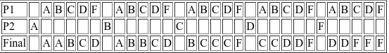
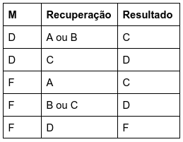
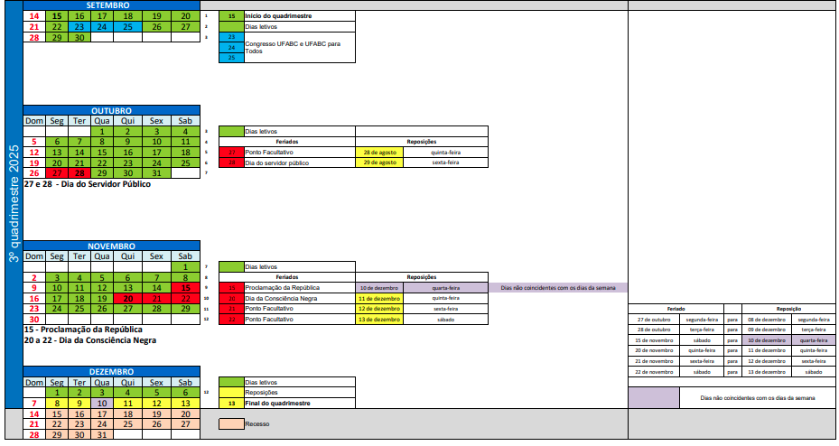

MCBM022-23 Introdução aos Processos Estocásticos
Jair Donadelli (sala 546, torre 2, bloco A) email jair.donadelli@ufabc.edu.br
Nessa disciplina vamos estudar os conceitos fundamentais de cadeias de Markov em tempo discreto e contínuo, martingales e teoria da renovação, com foco em suas propriedades, aplicações em modelagem e demonstrações teóricas. Calcular probabilidades de transição, retorno e limites, além de resolver e modelar situações-problema envolvendo esses temas.
onde: Seg. 21-23h; Qui. 19-21h) na sala A-114-0
TPEI 4-0-0-4 RECOMENDAÇÃO: Álgebra Linear; Cálculo de Probabilidade
Atenção: todo comunicado do professor para os alunos será feito via Siga, portanto, atente-se ao seu endereço de email dessa plataforma. Não use o Siga para se comunicar com o professor, envie email para o endereço acima.
EMENTA Cadeias de Markov discretas e comportamento assintótico: passeios aleatórios, processo de ramificação. Processos de Poisson. Cadeias de Markov em tempo contínuo. Processos de renovação. Martingales. Introdução ao movimento browniano.
BIBLIOGRAFIA BÁSICA
ROSS, Sheldon M. Introduction to probability models. 10. ed. Burlington: Academic Press, 2010. xv, 784 p. ISBN 9780123756862.
DURRETT, Richard. Essentials of stochastic processes. New York: Springer, 1999. vi, 281 p. (Springer texts in statistics). ISBN 9780387988368.
HAIGH, John. Probability models. Falmer: Springer, 2002. viii, 256 p. (Springer undergraduate mathematics). ISBN 1852334312.
BIBLIOGRAFIA COMPLEMENTAR
GRIMMETT, Geoffrey; STIRZAKER, David. Probability and random processes. 3. ed. Oxford; New York: Oxford University Press, 2001. xii, 596 p. ISBN 9780198572220.
BHAT, U. Narayan; MILLER, Gregory K. Elements of applied stochastic processes. 3. ed. Hoboken: Wiley Publishing, 2002. xi, 461 p. (Wiley series in probability and statistics). ISBN 9780471414421.
TAYLOR, Howard M.; KARLIN, Samuel. An introduction to stochastic modeling. 3. ed. San Diego: Academic Press, 1998. xi, 631 p. ISBN 9780126848878.
RESNICK, Sidney I. Adventures in stochastic processes. Boston: Birkhäuser, 1992. xii, 626 p. ISBN 9780817635916.
MATERIAL BIBLIOGRÁFICO COMPLEMENTAR
Probability, Mathematical Statistics, Stochastic Processes
Finite Markov Chains and Algorithmic Applications
Markov Chains and Mixing Times
| Semana e Tema | Objetivos | Tópicos | Referências |
|---|---|---|---|
| Semana 1 | - Apresentação da disciplina - Compreender o conceito de processo estocástico. | - Plano de ensino - Conceitos de Probabilidade - Espaço de estados, tempo discreto vs. contínuo. | Lista revisão de probabilidade |
| Semana 2 – Introdução a Processos Estocásticos e Cadeias de Markov Discretas | - Definir formalmente cadeia de Markov em tempo discreto. - Representar cadeias por matrizes de transição. | - Propriedade de Markov e homogeneidade no tempo. - Matriz de transição | Ross, Cap. 4.1–4.2. G&S (Grimmet & Stirzaker), Cap. 6.1–6.2. |
| Semana 3 – Classificação de Estados e Passeios Aleatórios | - Classificar estados: acessibilidade, comunicação, absorção. - Estudar passeios aleatórios como exemplo central. | - Acessibilidade, comunicação, classes fechadas, estados absorventes. - Periodicidade e aperiocidade. - Passeio aleatório simples em | Ross, Cap. 4.3. G&S, Cap. 6.3–6.5. |
| Semana 4 – Distribuições Invariantes e Convergência | - Calcular distribuições estacionárias. - Entender condições para existência e unicidade. - Estudar convergência em cadeias finitas. | - Definição: - Cadeias irreducíveis e aperiódicas. - Teorema ergódico (caso finito). | Ross, Cap. 4.4. G&S, Cap. 6.6–6.8. |
| Semana 5 – Processos de Ramificação | - Definir e analisar processo de Galton–Watson. - Usar funções geradoras para probabilidade de extinção. | - Definição e árvore de descendência. - Funções geradoras; regimes subcrítico, crítico e supercrítico. | Ross, Cap. 4.7. G&S, Cap. 6.9. |
| Semana 6 – Processos de Poisson | - Definir e caracterizar processo de Poisson. - Relacionar chegadas com tempos exponenciais. | - Incrementos independentes e estacionários. - Distribuição de contagem (Poisson). - Distribuição de tempos (exponencial). - Superposição e divisão. | Ross, Cap. 5.1–5.3. G&S, Cap. 6.10. |
| Semana 7 (feriado na 2ª) | Prova 1 | Conteúdo até teorema ergódico | |
| Semana 8 – Cadeias de Markov em Tempo Contínuo | - Introduzir cadeias de Markov em tempo contínuo. - Entender matriz geradora | - Definição; taxas de transição. - Equações de Kolmogorov (direita e esquerda). - Processos de nascimento e morte. | Ross, Cap. 6.1–6.4. G&S, Cap. 6.11. |
| Semana 9 – Martingales | - Definir martingais em tempo discreto. - Estudar propriedades básicas e exemplos. | - Martingal, sub e supermartingal. - Propriedades básicas. - Teorema de parada opcional (forma simples). | Ross, Cap. 13.1–13.3. G&S, Cap. 12. |
| Semana 10 - Introdução ao Movimento Browniano(feriado na 5ª) | - Definir movimento browniano e propriedades básicas. - Relacionar com passeios aleatórios como limite difusivo. | - Incrementos independentes e gaussianos. - Continuidade de trajetória. - Aproximação via passeio aleatório escalonado. | Ross, Cap. 10.1–10.3. G&S, Cap. 13. |
| Semana 11– Introdução ao Movimento Browniano | idem | idem | idem |
| Semana 12 – | Prova 2 e Sub | ||
| Semana de reposição | Atendimento e Exame de recuperação | Todo conteúdo |
2 provas. As avaliações são individuais. Serão atribuídos conceitos nas atividades avaliativas e o resultado é definido como segue:

A sub é aberta a qualquer aluno.
Tem direito ao exame recuperação aqueles que foram aprovado com D ou reprovado com F e obtiveram frequência mínima. O resultado do exame é um conceito que compõe com o conceito final M obtido na avaliação regular da disciplina como segue:

O aluno deve manifestar interesse em fazer a recuperação de acordo com as instruções que serão enviadas por email em momento apropriado durante o curso da disciplina.
2ª 20hs e 5ª 21hs ou qualquer outro horário combinado previamente.
